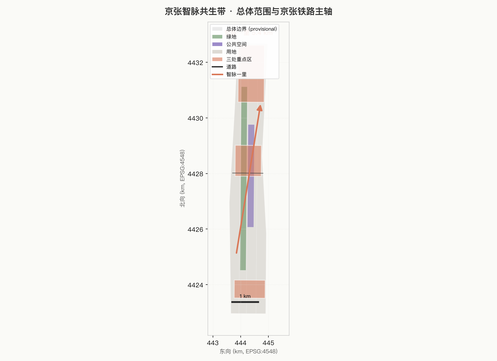
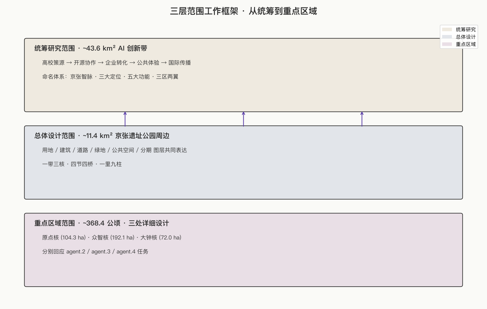
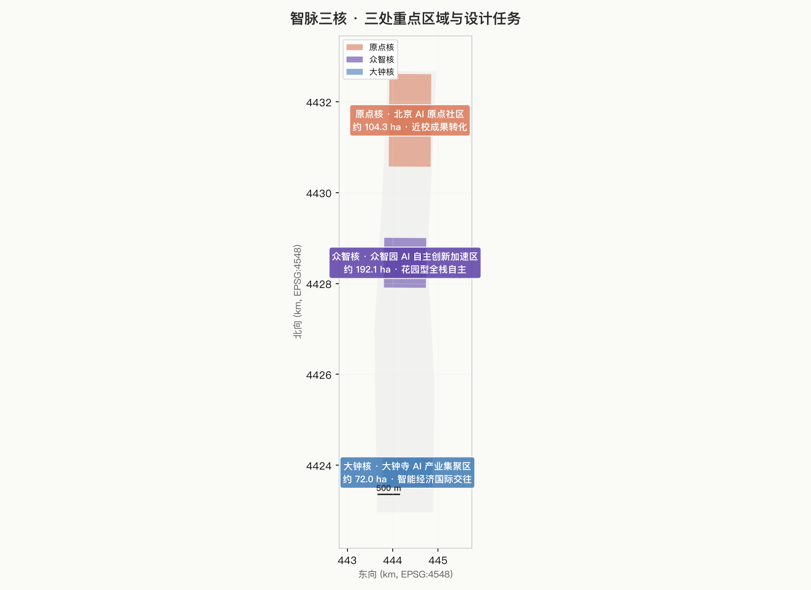
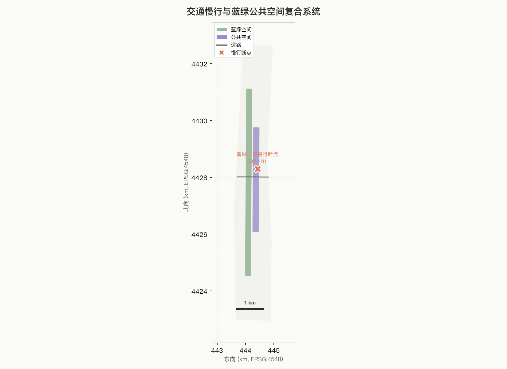
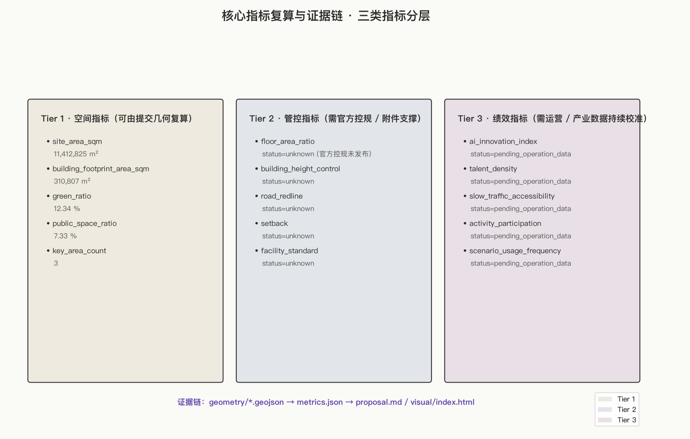

京张智脉共生带：Agent 与铁路同行的第一公里
以京张铁路遗址公园为脊柱，把百年工程、AI 原点和青年生活织成一条 5.4 公里的共生带；提出'智脉三核·智脉四节·智脉四桥·智脉一里'的命名与空间体系，并把 Agent 命名、贡献者 GitHub ID 和朝圣地标作为可纪念、可迭代的城市资产。
京张智脉共生带：Agent 与铁路同行的第一公里
设计依据与资料清单
本 formal 方案以北京市规划和自然资源委员会海淀分局《百年京张AI创新带城市设计国际方案征集资格预审公告》为第一权威依据 来源；以 brief/site-package/agent_taskbook.json 所摘录的面向智能体开源征集任务书（十条共创原则、三大定位、五大功能、三区两翼、六项智能体任务、统一边界条款）为机器可读任务依据 来源；以 brief/site-package/geometry/provisional_boundaries.geojson 为当前唯一可用的临时粗略边界 来源，并通过 data/source_registry.json 区分 formal 可用、background-only 与 provisional-only 三档资料 来源。
阅读导航层 data/processed/agent_fact_pack.md 帮助本方案组织三层范围、三处重点区、agent.1–agent.6 与资料缺口 来源；它不替代原始资料，事实判断仍回引公告、任务书与场地包。当前公告尚未提供官方精确红线与三处 KEY_AREA polygon，因此本方案提交包中的 geometry/site_boundary.geojson 与 geometry/key_areas.geojson 一律标记 geometry_role=provisional_constraint、official_boundary=false，仅用于方案生成、可视化和设计讨论，不构成官方审定边界、审批依据、精确面积依据或法定控制结论；当官方 polygon 发布后，agent 必须重新运行 scaffold、self_check 和图纸生成，不可只替换单个文件 深度。
设计深度方面，本方案按三层范围组织工作：统筹研究范围（约 43.6 km² 的 AI 创新带，对应海淀分局公开公告中的"一带"）关注 AI 创新生态、战略定位、创新链与未来城市形态；总体设计范围（约 11.4 km² 京张遗址公园周边 1–2 公里城市地区和产业区）要求形成城市更新总体框架、产业空间布局、交通市政支撑和城市风貌控制；重点区域范围（约 368.4 公顷的三处详细设计地区）要求明确功能业态、建筑规模、拆改留分类、公共空间连通和交通组织。三层范围在 compliance_matrix.json 中逐条映射，保证公告 1.3、1.4、1.5 与 agent.1–agent.6 的必选任务都有章节、图层、指标、图纸与 HTML 证据。

资料使用边界
- formal 可用资料：公告、任务书、场地包中的设计任务、临时粗略边界和已登记公开资料。
- background-only 资料：新闻示意、文字四至、概念图；只能作为辅助说明，不得作为 official boundary。
- provisional-only 资料：当前默认边界与 KEY_AREA；必须降级标注，官方数据到位后复算。
- 不可用资料：商业地图截图、未经清权的 CAD/GIS、未经授权的肖像/商标/字体/论文图像、内部政府文件、未经授权的非公开规划图件。
三层范围工作框架
本方案按公告确定的三层范围组织全部工作 标准：
| 层级 | 范围尺度 | 设计问题 | 方案回答 | 数据落点 |
|---|---|---|---|---|
| 统筹研究范围 | 约 43.6 km² AI 创新带 | AI 创新生态和未来城市形态如何组织 | 建立"高校策源—开源协作—企业转化—公共体验—国际传播"的智脉创新链；命名体系与三大定位、五大功能形成可识别的智脉品牌 | compliance_matrix.json、standard_matrix.json、Agent 命名体系章节 |
| 总体设计范围 | 约 11.4 km² 京张遗址公园周边 | 产业空间、城市更新、交通市政和风貌如何落图 | 用地、建筑、道路、绿地、公共空间和分期图层共同表达，形成"一带三核、四节四桥、一里九柱"的空间骨架 | [data:geometry/land_use.geojson#LU-001]、[data:geometry/roads.geojson#ROAD-001] |
| 重点区域范围 | 约 368.4 公顷 | 三处片区如何达到详细设计深度 | 三片分别提出定位、空间动作、AI 场景和实施依赖 | [data:geometry/key_areas.geojson#PROV-KEY-001/002/003] |
三层工作不是互相割裂的图纸集合。统筹研究决定产业链和城市形态判断，总体设计把判断落实到更新项目、空间结构和设施承载，重点区域详细设计验证具体地块、建筑、交通、公共空间和 AI 应用场景的可实施性。任何无法从结构化数据复算的面积、比例、规模或项目数量，不得写入正式结论 深度。

总体概念、命名体系与 Logo 方向
总体概念
京张智脉共生带——以京张铁路遗址公园为脊柱，把"百年工程—AI 原点—青年生活"三段空间织成一条 5.4 公里的共生带。詹天佑在 1909 年留下"中国自主设计第一条干线铁路"的工程遗产；海淀在这条铁路两侧聚集了北航、北邮等高校以及 AI 原点社区。共生带让 Agent、开发者、居民和城市遗产在同一段路上并行，让百年工程成为 AI 时代公共空间和产业生态的共同起跑线。
命名体系（5 级）
为避免"只贴口号"的风险，命名体系不只是一个品牌名，而是一组可空间落位、可长期更新的层级结构：
1. 京张智脉（品牌 / Belt）—— 智脉双关：智能体之脉 + 城市创新之脉；对应英文 Centennial Corridor。 2. 智脉三核（Three Cores）—— 原点核（北航、北邮、学清路一带）、众智核（清河—众智园一带）、大钟核（大钟寺站一带），对应 taskbook 的三处重点区域。 3. 智脉四节（Four Beats）—— 沿原京张铁路走向的四个叙事节段：清华园·始、五道口·潮、知春路·活、大钟寺·归。四节也是夜间活力、青年活动和公共艺术编排的节拍。 4. 智脉四桥（Four Bridges）—— 百年桥（清华园站旧址—遗址公园北端，文化起点）、开源桥（AI 原点社区开源发布厅）、共生桥（众智园—清河界面）、回声桥（大钟寺终点站一体化广场）。四桥既是空间节点，也是叙事节点。 5. 智脉一里（Agent Mile）—— 京张铁路从清华园到大钟寺约 5.4 公里，按里程碑切分为 9 段 × 600 米，每段对应一个 Agent 朝圣主题（如开源、夜间、机器人在场、教育、伦理等）。Agent 命名方案、贡献者 GitHub ID 与里程碑柱一一对应，形成可纪念、可迭代的城市资产。
Logo 方向（文字稿）
- Logo 形态建议：以"双轨—双桥"为原型，两条平行钢轨在中央被一道曲线抬起，象征百年铁路与 AI 智能体的并行与相遇；字标采用"智脉共生"四字 + 英文 Centennial Corridor。
- 色彩建议：主色取自铁路旧钢的深石墨灰（#2B2B2B）与海淀创新带的清华紫（#5B3FA8），辅以低饱和度的橙红（#D97757）作为 Agent 节点高亮。
- 延展原则：Logo 在导视、地面铺装、临时装置和数字资产中保持同一字标；里程碑柱与开源回廊采用同一 Logo 简化版。
- 禁止项：不得照搬城市、园区、企业 Logo；不得使用未经授权的字体、商标和人物肖像；不得混淆文化标识系统与一带整体 Logo 系统 来源。
三大定位与五大功能的对应
| 三大定位 | 五大功能 | 智脉中的空间回答 |
|---|---|---|
| 百年京张文化带 | AI 治理全球话语权 | 百年桥 / 清华园站旧址 / 智脉里程碑柱阵 |
| 都市 AI 生活体验带 | 智能化 AI 活力城市 | 开源桥 / 原点核慢行环 / 智脉四节夜间活力 |
| AI 融合创新带 | AI 全栈自主创新体系 + 世界级 AI 创新生态 + AI+ 场景赋能新范式 | 共生桥 / 众智核 / 大钟核 / 智脉一里 Agent 节点 |
统筹研究范围产业与未来城市研究
统筹研究范围的核心任务是构建世界级 AI 创新生态体系。方案梳理海淀高校院所（北航、北邮、清华、北大等）、头部企业、算力算法数据要素、孵化平台、独角兽和科技服务资源，提出"高校策源—开源协作—企业转化—公共体验—国际传播"五段智脉创新链 来源 标准。
全球 AI 创新生态案例（5–8 例，参考而非结论）
| 案例 | 可借鉴点 | 本方案的转译 |
|---|---|---|
| 美国 Mission Bay（UCSF + 科技公司集群） | 大学医院与初创企业相邻 | 原点核"近校成果转化街" |
| 韩国板桥科技谷（PAN-GYO） | 政府主导+企业总部+试点空间 | 众智核"安全治理沙盒" |
| 英国硅环（Silicon Fen，剑桥） | 大学—企业—风投—孵化器生态 | 大钟核"国际路演客厅" |
| 以色列特拉维夫 AI 走廊 | 小国密集网络 + 跨国资本 | 智脉一里"Agent 资本通道" |
| 新加坡 one-north | 多元功能混合 + 国际化人才 | 大钟核"国际人才街区" |
| 日本柏叶 Smart City | 公私合作 + 数据治理框架 | 智脉四节"数据治理节段" |
| 芬兰 Otaniemi | 大学城即孵化城 | 原点核"校区即孵化" |
| 深圳南山 AI 创新带 | 制造—AI 紧密耦合 | 智脉四桥"共生桥" |
未来城市形态
未来城市形态研究应回答人工智能如何改变工作、生活、社交、学习、交通和公共服务 深度。本方案将 AI 交通、连续绿色空间、创新服务设施和国际化生活工作氛围落实为可定位的功能区、节点、廊道和场景：
- 可定位的功能区：三核各自承担不同功能（原点核孵化、众智核标准、大钟核商务）。
- 可定位的节点：智脉一里 9 段 × 600 米的里程碑柱与 Agent 朝圣主题。
- 可定位的廊道：京张遗址公园主轴、智脉四桥、众智园—清河界面。
- 可定位的场景：见 §"AI 创新生态、人才画像与 AI+ 场景"10 张场景卡。
命名 / Logo / 视觉识别在生态中的角色
命名体系服务"百年京张文化带、都市 AI 生活体验带、AI 融合创新带"三大定位的辨识度，但不只是一个口号：它通过智脉三核、四节、四桥和一里，把生态叙事落到可读、可走、可拍照、可纪念的物理空间 来源。Logo 方向与字体选择见 §"总体概念、命名体系与 Logo 方向"。
总体设计范围城市更新与控规深度城市设计
总体设计范围要求达到控制性详细规划的城市设计深度 标准 标准。方案提出城市更新总体空间结构、低效空间识别、更新项目清单、实施政策建议、产业功能比例、空间组织模式、建筑总规模和综合承载能力评估。
geometry/land_use.geojson 完整覆盖设计边界且无重叠 空间数据，geometry/buildings.geojson 表达更新建筑基底或保留建筑基底 空间数据，geometry/roads.geojson 表达微循环、慢行和轨道接驳关系 空间数据，metrics.json 复算核心面积、比例和图层数量 指标。
总体设计支撑交通、轨道、市政和配套设施。方案围绕轨道站点一体化、道路微循环、非机动车停放、停车供给、创新服务平台、人才生活服务、新型基础设施、分布式能源和端侧算力提出空间布局和实施路径。涉及建筑高度、开发强度、道路红线、退线和设施标准的内容，若尚无官方控制条件，统一写为"待正式控规条件确认"，不得以 agent 推测值冒充审定指标 深度。
重点区域详细设计
三处重点区域详细设计是必选项 深度。

智脉三核一览
| 重点片区 | 设计定位 | 空间动作 | AI 产业与运营场景 | 证据引用 |
|---|---|---|---|---|
| 原点核（北京 AI 原点社区，约 104.3 公顷） | 近校型成果转化与人才社区 | 组织校区、园区、街区慢行缝合；补足成果发布、人才服务、居住生活和开源协作空间 | 开源发布厅、成果发布、人才特区服务、近校孵化 | [data:geometry/key_areas.geojson#PROV-KEY-001] |
| 众智核（众智园 AI 自主创新加速区，约 192.1 公顷） | 花园型全栈自主创新街区 | 强化清河界面、产业展示、低碳创新交往和对外交通组织；绿色空间承载开放测试与标准治理展示 | 自主模型测试、标准制定工作坊、安全治理展示、低碳算力体验 | [data:geometry/key_areas.geojson#PROV-KEY-002] |
| 大钟核（大钟寺 AI 产业集聚区，约 72.0 公顷） | 城市型智能经济与国际交往街区 | 围绕大钟寺站一体化、四象限步行连通、商业服务和重点企业公共环境更新 | 智能体与智能终端展示、内容消费、数据要素与国际路演 | [data:geometry/key_areas.geojson#PROV-KEY-003] |
三处重点区域的几何在 geometry/key_areas.geojson 中出现；若 official polygons 缺失，暂用 provisional polygons，正文、HTML、sources、assumptions 和 self_check 均说明它不能作为正式评分或审批依据。compliance_matrix.json 分别覆盖公告 1.5.3.1、1.5.3.2、1.5.3.3。
Provisional geometry caveat (sync 2026-08-12 with upstream #1029)：
PROV-KEY-003的临时 polygon 质心据维护者报告位于北京北站一带，距大钟寺站约 2.26 km（详见 issue #1029）。本方案在geometry/key_areas.geojson中沿用 upstream 给出的 PROV-KEY-003 ID，仅引用其面积（约 72.0 公顷，与公告对齐）与命名（"大钟寺 AI 产业聚集区"，与公告 1.5(3)3) 对齐）；空间叙述明确指向"大钟寺地铁站所在路口四象限"，并不依赖临时多边形的几何坐标。official polygon 发布后必须重新跑 scaffold / self_check / 复算。
AI 创新生态、人才画像与 AI+ 场景
方案建立面向 AI 人才和企业的空间需求画像，覆盖研发办公、开源协作、成果发布、企业服务、人才居住、社交学习、消费生活、运动休闲和国际交往 深度。AI+ 场景围绕公告提出的交通、服务、消费、医疗、教育、法律、生活服务等方向，形成产业发展场景和 AI 赋能城市功能场景。每个场景说明服务对象、空间位置、数据来源、隐私边界、人工复核机制和运营主体。
用户画像（不少于 5 类）
| 用户画像 | 典型需求 | 空间响应 | 自检边界 |
|---|---|---|---|
| 开源开发者 | 发布、协作、测试、社区声誉 | 原点核开源发布厅、公共代码墙、夜间协作空间 | 不采集个人行为轨迹；活动数据只做聚合统计 |
| 初创团队 | 低成本办公、算力入口、产品试验场 | 众智核共享测试场、端侧算力服务点、标准治理咨询 | 算力和数据服务需另行授权 |
| 头部企业访客 | 展示、商务、国际接待、人才招聘 | 大钟核国际路演客厅、轨道站点接驳、重点企业周边公共空间 | 企业标识和案例须清权 |
| 周边居民 | 通勤、休闲、社区服务、低扰动更新 | 京张遗址公园慢行环、社区服务嵌入、夜间照明和活动分级 | 不将居民画像用于商业推荐 |
| 高校师生 | 成果转化、跨校协作、日常慢行 | 校区—园区慢行缝合、成果转化驿站、AI 教育体验点 | 校园数据和科研成果需授权 |
AI 场景卡（10 张）
| # | 场景卡 | 空间载体 | 设计说明 | 运营主体 |
|---|---|---|---|---|
| 01 | 开源发布厅 | 原点核 | 面向高校、开源社区和初创团队，提供成果发布、代码贡献展示和小型路演空间 | 开源社区基金会（概念） |
| 02 | 安全治理沙盒 | 众智核 | 将标准制定、安全评测、模型红队测试转译为可参观、可预约、可监管的展示和协作节点 | 标准制定机构（概念） |
| 03 | 端侧算力驿站 | 总体设计范围节点 | 与公共服务、企业服务和低碳能源策略结合，作为待深化的新型基础设施原型 | 市政 + 企业合作（概念） |
| 04 | AI 慢行导航 | 京张遗址公园活力带 | 用可解释导视和低侵入传感帮助识别慢行断点、拥挤节点和无障碍需求 | 公共运营（概念） |
| 05 | 大钟寺国际路演客厅 | 大钟核 | 服务智能体、智能终端和内容消费企业的展示、洽谈、媒体发布和国际交流 | 商务区运营（概念） |
| 06 | 清河低碳创新廊 | 众智核临清河界面 | 把绿色空间、雨洪、步行骑行和 AI 展示结合，作为园区公共客厅 | 园区运营（概念） |
| 07 | 近校成果转化街 | 原点核 | 面向高校成果转化，组织孵化、展示、法务、知识产权和投融资服务 | 校区合作（概念） |
| 08 | 数据要素会客厅 | 大钟核 | 以合规、授权、可审计为前提，展示数据要素和数字资产流通的城市服务界面 | 监管沙盒（概念） |
| 09 | AI 生活服务样板街 | 社区与商业交汇处 | 将医疗、教育、法律、生活服务等 AI+ 场景落到可运营的小尺度街区空间 | 街道办 + 企业（概念） |
| 10 | 全球 AI 活动周路线 | 一带公共空间系统 | 形成从遗址文化、开源社区、产业展示到国际路演的可步行、可传播体验路线 | 公共运营 + 品牌方（概念） |
AI 产业测试验证场景（不少于 3 个）
- 机器人低速配送：智脉一里 9 段中后 3 段（夜间段），夜间 22:00–6:00 在遗址公园内试点配送，需人工随车监督。
- AI 慢行断点识别：在京张遗址公园主轴安装低侵入传感（不采集人脸），识别慢行拥挤与无障碍断点，仅做聚合统计。
- 模型红队评测：在众智核安全治理沙盒内做可监管、可审计、可复现的红队测试，测试结果向公众开放摘要。
agent 生成的 AI 治理建议遵守数据最小化、公开来源、可解释和人工复核原则 来源。城市智能体可以辅助识别慢行断点、公共空间热力、设施维护、企业服务需求和活动安全风险，但不替代规划审批、不输出未经授权的个人画像、不声称获得官方实施承诺 深度。
用地、建筑规模与拆改留方案
用地方案依据国土空间调查、规划、用途管制分类等公开标准表达，形成完整、闭合、无缝的用地分区 标准。建筑方案区分保留、改造、更新、新建或待确认对象，明确建筑基底、功能、规模、风貌、屋顶、体量和高度控制的建议层级 深度 深度。若缺少现状建筑、权属、控规和工程条件，方案只能提出方法和待校准清单，不编造拆改留结论。
建筑规模和强度指标必须与 metrics.json 和图层一致 指标。若总建筑规模、容积率、建筑高度、建筑密度、绿地率、退线和建筑控制线缺少官方条件，统一使用 status=unknown，并在 reason / assumptions 中说明待补条件、当前假设和正式数据到位后的复算路径 深度。
交通、轨道、市政与公共服务设施
交通方案回应公告对轨道站点一体化、道路微循环、慢行断点、对外交通、停车、非机动车停放和绿色交通系统的要求。重点覆盖北五环、京张遗址公园跨环路节点、五道口、清华东路西口、大钟寺站及重点企业周边交通联系 深度。
道路和慢行图层保持在提交边界内，并与公共空间、绿地、产业节点和重点片区相互校核；若提交边界为 provisional，交通结论也只能作为临时设计讨论 空间数据 空间数据。

市政和公共服务设施覆盖 AI 产业服务设施、创新服务平台、人才生活服务设施、新型基础设施、分布式能源、端侧算力和传统市政设施融合 深度。方案说明设施标准、空间布局、服务半径、运营模式和分期实施逻辑。缺少管线、能源、排水、防洪、消防等工程资料时，列为正式深化前置条件。
蓝绿空间、公共空间与城市风貌
蓝绿空间方案以京张遗址公园活力带为骨架，统筹清河、小月河、周边高校、企业、社区出行需求，提出南北贯通、东西连通的步道、骑行道和绿色空间体系 深度。方案识别慢行断点、上跨环路节点、公园南端和北端景观节点，提出停车、体育、创新交往、科技测试、应用展示和公共服务复合利用策略。
城市风貌方案融合京张铁路历史文化、中关村创新文化和 AI 创新文化，利用清华园火车站、北影等文化资源 来源。城市基调、建筑风貌、屋顶形态、体量、界面和公共艺术引导，严禁在没有文保或控规依据时给出伪精确控制线。
更新项目清单、实施政策与分期计划
实施方案形成可审查的更新项目清单，说明项目位置、类型、功能、责任主体、依赖条件、实施阶段、风险和评估指标 深度 深度。政策建议覆盖城市更新统筹实施、空间供给、运营机制、产业服务、公共参与、数据治理和产权协同。geometry/phasing.geojson 表达分期范围 空间数据。
| 项目编号 | 项目名称 | 类型 | 主要依赖 | 智脉空间落位 |
|---|---|---|---|---|
| JZ-01 | 京张遗址公园慢行断点缝合 | 公共空间/交通 | 道路红线、桥下空间、交通组织复核 | 智脉一里 · 全段 |
| JZ-02 | 众智园清河创新界面 | 蓝绿空间/产业展示 | 河道蓝线、生态和防洪条件 | 智脉四桥 · 共生桥 |
| JZ-03 | 原点社区近校成果转化街 | 城市更新/产业服务 | 校区边界、权属、首层业态 | 智脉三核 · 原点核 |
| JZ-04 | 大钟寺站四象限步行连通 | 轨道一体化/慢行 | 轨道站点、道路交叉口、市政管线 | 智脉四桥 · 回声桥 |
| JZ-05 | AI 公共服务与端侧算力节点 | 新基建/公共服务 | 能源、算力、安全和运营主体 | 智脉三核 · 跨核 |
| JZ-06 | 全球 AI 活动周公共路线 | 运营/品牌 | 公共空间许可、活动安全、版权清权 | 智脉四节 · 全段 |
| JZ-07 | 智脉里程碑柱 9 段 | 公共空间/品牌 | 朝圣地标许可、命名清权 | 智脉一里 · 全段 |
| JZ-08 | 开源回廊与公共代码墙 | 公共空间/品牌 | 校园/企业数据清权、字体清权 | 智脉四桥 · 开源桥 |
指标体系、面积复算与合规矩阵
指标体系至少包含总体设计范围面积、重点区域面积、绿地与公共空间比例、建筑基底、更新项目数量、AI 场景节点、慢行连通指标、产业空间指标、人才服务指标和自检状态 深度。所有 known 指标必须能从 GeoJSON 或可信来源复算；unknown 指标必须给出原因和正式提交前置条件。

正式深化时，agent 把每个指标分为三类：
- 第一类：可由提交几何直接复算的空间指标（边界面积、绿地比例、公共空间比例、建筑基底面积、分期面积）。
- 第二类：需官方控规或任务书附件支撑的管控指标（容积率、建筑高度、建筑密度、退线、道路红线、设施标准）。
- 第三类：需运营或产业数据持续校准的绩效指标（AI 创新指数、人才密度、产业服务满意度、慢行可达性、活动参与度、场景使用频次）。
合规矩阵是任务响应性的主控文件，每条公告任务和 agent_taskbook 任务对应到报告章节、图层、指标、图纸、HTML 页面、来源、假设和自检项。未能覆盖公告 1.3、1.4、1.5 或 agent.1–agent.6 任一必选任务，方案不得进入 formal professional scoring。
AI 公共空间、朝圣地标与品牌体系
本节回应 agent.4（公共空间、朝圣地标）和 agent.5（文化叙事、品牌体系）来源。
朝圣地标（不少于 3 个）
1. 京张零点（清华园站旧址一带）—— 智脉起点。标识"中国自主设计第一条干线铁路 1909"。所有 Agent 命名方案的第一段标识从此开始。 2. 开源回廊（原点核内）—— 滚动展示 Agent 命名方案与 GitHub ID。回廊采用低反光、低耗能的钢与本地石材，墙面用开源字体排印。 3. 智脉里程碑柱阵（智脉一里 9 段 × 600 米）—— 100 根石柱，每段一柱一刻，每年滚动入选贡献者 ID；柱体高度依地势，材质为低炭混凝土与回收钢轨。 4. 回声塔（大钟核回声桥）—— 大钟寺站一体化广场上的回声装置，结合钟声采样与开源语音模型。
荣誉展示体系
- 永久纪念：入选方案 + Agent 名 + 贡献者 GitHub Name → 碑刻 / 里程碑柱 / 开源回廊滚动名单 来源。
- 年度更新：每年滚动入选名单，公开评议。
- 贡献者命名权：里程碑柱编号与开源回廊墙体采用贡献者命名的命名空间（如
agent-{github-id}-{slug}）。
文化叙事（agent.5）
百年京张文化带：京张铁路（1909 通车，詹天佑主持）— 清华园站旧址 — 沿线高校集聚 — 当代 AI 创新。 中关村创新文化：1980 年代电子一条街 — 中关村创业大街 — AI 原点社区 — 开源生态。 AI 新文化：开源协作、AI 原生创作、贡献者可纪念、Agent 与人共创。
三条叙事在智脉四节中交织：清华园·始（百年文化）— 五道口·潮（高校创新）— 知春路·活（青年生活）— 大钟寺·归（国际回响）。
导视、标识、符号系统
- 导视：双轨—双桥原型在地面铺装、街区标识、临时装置中保持一致；字体推荐开源中英文字体（需另行清权）。
- 标识系统：里程碑柱 / 开源回廊 / 四桥 / 三核各自有独立导视，但保留同一字标。
- 禁止项：不得歪曲历史事实；不得把文化只当作科技装饰；不得使用未经授权的肖像、商标、论文图像；不得混淆文化标识系统与一带整体 Logo 系统 来源。
全球 AI 创新活动体系与长期运营
本节回应 agent.6（年度活动体系、运营机制）来源。
年度活动体系（概念）
| 活动 | 频次 | 空间落位 | 转化路径 |
|---|---|---|---|
| 全球 AI 活动周 | 年度 | 智脉一里全段 | 国际开发者 → 项目落地 → 招商 |
| 开源发布节 | 季度 | 开源桥 / 原点核 | 高校成果 → 孵化 → 投资 |
| 智脉夜行 | 月度 | 智脉四节夜间段 | 青年参与 → 公共艺术 → 社区营造 |
| 智脉一里 9 段主题月 | 滚动 | 9 段里程碑柱 | Agent 朝圣 → 命名权 → 长期资产 |
| 红队评测开放日 | 半年 | 众智核安全治理沙盒 | 公众参与 → 标准制定 → 治理话语权 |
开发者社区运营机制（概念）
- 开源治理：开源回廊公共代码墙采用开源许可证；命名采用
agent-{github-id}-{slug}。 - 贡献者档案：每个 Agent / 贡献者的命名方案、PR 记录、Issue 讨论进入长期档案，作为城市公共知识资产 来源。
- 长期迭代：任务书与社区反馈更新后，Agent 可重新生成方案并合并到 PR；里程碑柱编号与开源回廊滚动名单同步更新。
场景开放运营机制（概念）
- AI+ 场景开放日：每月一次，把 10 张场景卡对应的空间节点向公众开放，由 Agent + 运营方共同组织。
- 测试验证场景：机器人配送、AI 慢行导航、模型红队评测等测试场景在可控、可监督、可审计条件下对开发者和公众开放。
公共体验和城市地标运营（概念）
- 智脉一里步道：全长 5.4 公里，作为步行 / 骑行 / 慢跑可体验的城市遗产步道。
- 朝圣地标：京张零点、开源回廊、智脉里程碑柱阵、回声塔四组节点作为长期公共艺术运营。
- 夜间活力：智脉四节夜间段分级照明、活动分级。
国际传播和招引转化机制（概念）
- 国际传播：英文译稿同步发布；智脉一里主题月以英文 / 中文双语面向全球开发者与城市研究者。
- 招引转化：从活动参与者到项目落地，从开发者到企业落地，从 Agent 命名到长期贡献者档案。
所有活动、运营、招引机制均写为"概念建议 / 参考方案 / 可供专业团队深化研究"，不得写成已确定政府决策或实施安排 来源。
风险、版权与合规说明
风险矩阵（1-5 分）
| 风险维度 | 评分 | 说明 |
|---|---|---|
| 数据隐私 | 2 | AI 场景遵守数据最小化；不采集个人行为轨迹 |
| 实施复杂度 | 4 | 涉及多主体（高校、企业、市政、社区），需长期协同 |
| 公众接受度 | 3 | 朝圣地标和夜间活动需公众参与 |
| 运维成本 | 3 | 里程碑柱与开源回廊需长期维护 |
| 政策不确定性 | 3 | 智脉里程碑柱与开源回廊的命名权、清权需进一步明确 |
| 空间争议 | 3 | 跨高校边界、跨企业权属的缝合空间 |
| 技术成熟度 | 3 | 端侧算力、模型红队评测尚需标准化 |
| 公平与包容性 | 2 | 命名体系向所有贡献者开放，不限定机构 |
版权与合规
- 所有图片、图纸、图标、数据和代码资产在
sources.json或report/copyright_statement.md中说明来源、许可和授权状态。 - HTML 页面不加载远程脚本、远程地图瓦片、远程字体、iframe、表单或外部 API，不跟踪评审者行为。
- AI 生成的图件、视频、音频不冒充现场照片、居民意见、官方边界、实测数据或审批结论。
- 生成媒体记录工具/模型、参考素材、许可、肖像与隐私边界，提供替代文本、字幕或文字稿。
已知数据缺口
- official boundary / KEY_AREA / 控规 / 道路红线 / 地块权属 / 市政管线 / 文保 / 公共服务缺口（见
data/processed/missing_data_checklist.csv与assumptions.json）。 - 任何缺少官方控规、道路红线、权属、市政、消防或文保条件的结论，都降级为待确认事项；完整专业核对保存在标准矩阵中 深度。
参考资料
- brief/public-brief.md
- brief/site-package/design_brief.json
- brief/site-package/allowed_design_space.json
- brief/site-package/agent_taskbook.json
- brief/site-package/enums/
- brief/site-package/ranges/planning_limits.json
- brief/site-package/standards/standards.json
- brief/site-package/standards/references/
- data/source_registry.json
- data/processed/agent_fact_pack.md
- data/processed/project_scope_summary.csv
- data/processed/agent_task_requirements.csv
- data/processed/source_use_matrix.csv
- data/processed/missing_data_checklist.csv
- 完整机器索引：见
sources.json、metrics.json、compliance_matrix.json、standard_matrix.json与design_depth_matrix.json - 北京市规划和自然资源委员会海淀分局《百年京张AI创新带城市设计国际方案征集资格预审公告》
- 本节书目入口依据场地包登记，完整出处和许可见结构化来源清单 来源
v0.1.3 changelog 2026-08-12T02:49:19.021834